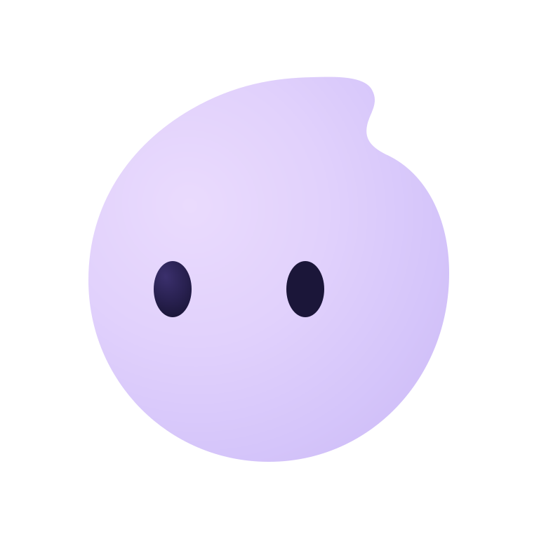

Sample note · Personal
Room between things
Leave a little room between things. Not every moment needs a plan.
Take the longer way home. Bring a book. Let the next idea arrive when it’s ready.
A thought to come back to.

floeA personal assistant, taking shape
Your plans, your thoughts, the things that matter.
Floe is being built to help them flow together.
Open source. In active development.
Tuesday, October 13
Room between things.
Try checking a task. This stays in the illustration.
Leave a little room between things.
Not every moment needs a plan.
A few things for today
Sample tasks. Changes are local to this page and reset on reload.
Something worth keeping
Sample note · Personal
Leave a little room between things. Not every moment needs a plan.
Take the longer way home. Bring a book. Let the next idea arrive when it’s ready.
A thought to come back to.
Illustrative content inspired by Floe’s Notes collection.
A Day Canvas for what’s now. Space for what’s next.
Try Day Canvas, Tasks, and Notes above.
The way we’re building
Floe’s starting point is your life.
More context should mean less to manage.
What’s happening now, what’s coming next, and the notes and tasks around them. The important things get room to be seen.
The aim is context you can return to, without explaining your situation from the beginning. One Floe, with your day in view.
Floe is designed to propose before consequential changes. You should be able to see what will change, and decide what Floe may do.
An open work in progress
Floe is pre-stable. The current focus is macOS stability and product quality. You can explore the source, read the thinking, and follow what comes next.
Foundations you can find in the source.
Individual actions depend on connected application services. This illustration is not a live client.
Product intentions, with no release dates promised.
A calmer kind of personal workspace
Start with the idea. Stay for what it becomes.